Chapter 6 t검정과 ANOVA
모집단 평균에 관한 가설검정 종류
t검정 (t-test)
- t검정의 개념 및 가정
- 단일 모집단평균에 대한 t 검정
- 동일 모집단 반복측정 평균에 대한 t 검정(paired t-test, 쌍체비교)
- 두 모집단 평균에 대한 t 검정
- t검정 효과 크기
- R을 활용한 t 검정 실습
분산분석 (ANOVA)
- 분산분석 (ANOVA)의 개념
- 일원분산분석 (one-way ANOVA) 공식
- 손으로 푸는 일원분산분석 (one-way ANOVA)
- R을 활용한 일원분산분석 (one-way ANOVA)
6.1 모집단 평균에 관한 가설검정
모집단에 대한 가설검정은 검정 대상에 따라 크게 두가지 종류가 있다. (1) 모집단의 평균(\(\mu\)) 검정, (2) 모집단의 분산(\(\sigma^2\)) 검정이다. 검정 대상이란 무엇일까? 앞서 살펴본 중심극한정리에 따라 우리는 소량의 표본(sample)의 통계량(표본평균, 표본분산)을 활용해 모집단의 모수(모집단 평균, 모집단분산)을 추정할 수 있음을 이해했다. 여기서 가설검정이란 추정하는 대상이 모집단 평균과 모집단 분산인지를 의미한다.
아래 그림과 같이 가설검정 대상에 따라 검정 방식은 모두 달라진다. 모집단 평균을 검정하는 경우 모집단의 수에 따라 검정방식이 달라진다.
- 1개 모집단의 평균을 검정 : t 검정 (예: H1: 서울대학교 학생들의 평균키는 165cm이다)
- 2개 모집단의 평균 차이 검정 : 단일 모집단 t 검정 : (H1: 서울대학교 남학생의 입학당시 IQ와 졸업당시 IQ는 차이가 있다. ) 두 모집단 T검정 : (H1: 서울대학교 남학생과 여학생의 평균키는 차이가 있다)
- 3개 모집단의 평균 차이 검정 : ANOVA (H1: 서울대학교 학생의 GPA는 학년별(1/2/3/4학년)로 차이가 있다)
한편 모집단 분산을 검정하는 경우에도 모집단의 수에 따라 검정방식은 다르다
- 1개 모집단의 분산을 검정 : 카이제곱 검정
- 2개 모집단의 분산을 검정 : F 검정
이 장에서는 산업인력개발 분야에서 주로 쓰이는 모집단 평균 검정에 국한하여 살펴보도록 하겠다.
6.3 t 검정 (t-test)의 개념 및 가정
t 검정에 대해 알아보기 전에, 먼저 가설검정에 대해 좀더 자세히 알아보자. 가설 검정은 연구자가 세운 가설(alternative hypothesis)가 참인지 확인하는 절차이다. 가설검정의 중요한 원리는 영가설, 또는 귀무가설(null hypothesis)을 기각하는 방식으로 연구가설을 채택한다는 점이다. 다음의 예시를 통해 이해해보자.
서울대학교 학생회관 근처를 지나가는 학생들 100명을 표집하여 키(cm)를 측정했더니 평균 168cm가 나왔다. 이 평균키가 서울대학교 전체 학생들의 키 분포에서 나왔는지, 아니면 다른 분포에서 나왔는지 검증하려고 한다(예: 서울대학교 농구부 학생들처럼 키가 큰 학생들의 분포에서 나왔는지)
서울대학교 전체 학생의 평균키는 평균키 165cm, 분산은 4인 정규분포를 따른다는 정보를 알고 있다. 우리가 갖고 있는 표본이 이 분포에서 나왔다고 가정하자(H0: X~N(165, 4))
평균을 검정하는 것이므로 영가설과 연구가설은 다음과 같이 쓸 수 있다. \(H_0: \mu_x=165\) \(H_1: \mu_x\neq 5\)
표본의 평큔키인 168cm가 \(N(165,4)\)의 분포에서 나올 확률을 구한다.
만일 이 확률이 우리의 기준 확률보다 낮으면, 표본의 평균키가 해당분포에서 나올 확률은 극히 드물것이다. 따라서 표본은 서울대학교 전체 학생들의 키 분포에서 나왔다는 영가설을 기각하고, 우리의 표본은 새로운 분포에서 나왔다는 연구가설(H1)을 채택할 수 있다.
하지만 대부분의 경우 우리는 모집단의 분포에 대한 정보(\(\mu\), \(\sigma^2\))를 알지못한다. 따라서 표본의 평균(\(\bar{X}\))과 표본의 분산(\(S^2\))를 사용하여 모집단의 평균과 분산을 추정할 수 밖에 없다는 것을 기억하자.
6.3.1 단일 모집단 평균에 대한 t 검정
단일 모집단 평균에 대한 t 검정은 우리가 수집한 표본의 평균이 모집단 평균과 차이가 있는지를 확인하는 검정방식이다. 좀더 구체적으로 설명한다면 표본의 평균이 모집단의 분포에서 나온것인지를 확인하는 것이다. 다음의 예시를 살펴보자
- A회사는 자사의 노트북 배터리 용량이 길다고 홍보하고 있다. 제품 스펙에는 배터리 용량이 80시간으로 되어 있는데, 소비자들은 80시간보다 짧은 것 같다고 불만을 나타내고 있다. 이를 확인하기 위해 우리는 A회사 노트북 100개를 무작위로 수집하여 배터리 용량을 각각 측정해보았다. 측정결과 표본 100개의 평균 배터리 용량은 평균 79시간이었고, 분산은 4였다. 노트북 배터리가 80시간보다 짧은지 유의수준 0.05에서 검증해보자.
위와 같은 예시에서 연구가설과 영가설은 다음과 같이 쓸 수 있다.
\(H_1\): \(\mu\)<80 (노트북의 배터리 용량은 80시간보다 작다) \(H_0: \mu\geq80 또는 \mu=80\)노트북의 배터리 용량은 80시간과 같거나 크다.
즉, 우리가 수집한 100개의 노트북 배터리의 평균 용량 79시간이 \(N(80, \sigma^2)\)의 분포에서 나온것인지 확인하는 것이다. 안타깝게도 모집단의 평균은 80시간으로 알려져있지만 분산값은 확인할 수가 없다. 이 경우는 표본의 분산값을 사용해 모집단의 분산을 추정해야 한다. 앞서 중심극한정리에서 간단히 설명한 바와 같이 모집단의 분산과 표본의 분산은 완전히 일치하지 않지만 가장 적합한 추정량이기 때문에 이를 사용하게 된다.
만일 우리가 모집단의 평균과 분산을 모두 안다면, 표준정규분포로 변환하여 구간확률을 구할 수 있었던 점을 기억하자. 이때 Z-score는 다음과 같은 공식으로 산출된다.
\(Z=\frac{\bar{X}-\mu}{\sigma}\)
우리는 모집단의 표준편차(sigma)를 알지 못하므로, 표본의 표준편차를 표본크기 제곱근(\(\sqrt{n}\))으로 나눈값을 활용해 모집단 표준편차를 대체해보자. 이때의 값을 t-score로 명명한다.
\(t=\frac{\bar{X}-\mu}{\frac{S}{\sqrt{n}}}\)
\(\bar{X}=79\), \(\mu=80\), \(S=2\), \(n=100\)이므로 t값은 다음과 같이 계산된다.
\(t_{\bar{X}}=\frac{79-80}{2/\sqrt{100}} =-5\)
산출된 t값 -5는 검정통계량이라고 하며, 검정통계량을 임계치와 비교함으로서 연구가설의 채택여부를 결정한다. 우리의 유의수준은 .05이며, 자유도 99(100-1)의 t값의 임계치는 \(-1.64\)이므로 절대값이 임계치보다 크다. 따라서 영가설을 기각하고 연구가설을 채택할 수 있다.
그림삽입
따라서 유의수준(\(\alpha\)) 0.05에서 A 회사의 노트북 배터리의 평균 용량은 우리의 주장대로 80시간보다 작은 것으로 판단된다.
6.3.2 동일 모집단 반복측정 평균에 대한 t 검정
동일 모집단을 반복측정한 두 평균에 대한 t 검정은 흔히 쌍체비교 t 검정 (paired t-test)이라고 불린다. 산업인력개발분야에서 가장 대표적인 쌍체비교 t 검정 사례는 교육훈련 프로그램 전/후의 직무 수준의 차이가 통계적으로 유의미한지를 확인하는 주제일 것이다. 예를 들어 A 회사의 25명의 사람들에게 특정한 직무훈련프로그램을 제공하였다고 가정해보자. 우리는 직무훈련 프로그램의 효과성을 검증하기 위해 훈련프로그램 전/후의 직무 수준을 측정할 것이다. 25명의 사람들의 교육전 직무 수준을 측정하였더니 평균 3.00(5점 만점)이었다. 직무훈련프로그램을 이수한 후에 동일한 측정도구로 직무 수준을 측정하였더니 평균 3.30(5점 만점)이 나왔다. 프로그램은 효과적이었는가? 다시 말해 훈련프로그램 전 후의 직무수준은 유의미한 차이가 있는가?
위의 실험에서 우리는 동일한 모집단에게서 반복 측정된 숫자 두 가지를 갖게 된다. 첫번째 사람의 훈련 전/후 직무수준, 두 번째 사람의 훈련 전/후 직무 수준….25번째 사람의 훈련 전/후 직무수준으로 총 50개의 자료를 얻었다. 이들 자료는 전체 평균으로 비교할 것이 아니라 동일한 개인의 사전/사후 검사를 비교해야만 의미가 있을 것이다.즉,쌍별(paired) 평균 비교를 해야 한다.
관련한 쌍체비교 t 검정을 하기 위해 연구가설과 영가설을 다음과 같이 쓸 수 있다.
\(H_1: \mu_{\bar{d}}=\mu_{X_{후}}-\mu_{X_{전}}>0\) (훈련프로그램 사후 직무수준이 사전 직무수준보다 크다) \(H_0: \mu_{\bar{d}}=\mu_{X_{후}}-\mu_{X_{전}}=0\) (훈련프로그램 사전/사후 직무수준의 차이는 없다)
| pre-test(x_pre) | post-test(x_post) | differences(x_post-x_pre) | square of deviation | |
|---|---|---|---|---|
| 1 | 3.0 | 3.2 | 0.2 | 0.04 |
| 2 | 3.5 | 3.8 | 0.3 | 0.09 |
| 3 | 3.2 | 3.4 | 0.2 | 0.04 |
| 4 | 3.0 | 2.8 | -0.2 | 0.04 |
| 5 | 2.8 | 3.5 | 0.7 | 0.49 |
| 6 | 3.1 | 3.2 | 0.1 | 0.01 |
| 7 | 3.1 | 3.3 | 0.2 | 0.04 |
| 8 | 3.2 | 3.7 | 0.5 | 0.25 |
| 9 | 2.9 | 3.1 | 0.2 | 0.04 |
| 10 | 3.0 | 3.8 | 0.8 | 0.64 |
| 11 | 3.0 | 3.3 | 0.3 | 0.09 |
| 12 | 3.1 | 2.9 | -0.2 | 0.04 |
| 13 | 3.3 | 3.1 | -0.2 | 0.04 |
| 14 | 2.0 | 2.8 | 0.8 | 0.64 |
| 15 | 3.5 | 3.6 | 0.1 | 0.01 |
| 16 | 3.2 | 3.5 | 0.3 | 0.09 |
| 17 | 3.3 | 3.7 | 0.4 | 0.16 |
| 18 | 2.8 | 2.9 | 0.1 | 0.01 |
| 19 | 2.9 | 2.9 | 0.0 | 0 |
| 20 | 2.9 | 3.6 | 0.7 | 0.49 |
| 21 | 2.7 | 3.3 | 0.6 | 0.36 |
| 22 | 3.2 | 3.5 | 0.3 | 0.09 |
| 23 | 3.0 | 3.1 | 0.1 | 0.01 |
| 24 | 3.1 | 3.4 | 0.3 | 0.09 |
| 25 | 2.8 | 2.6 | -0.2 | 0.04 |
| 6.4 | 3.84 | |||
| 평균= 3.0 | 평균=3.3 | 평균= 0.3 | S=0.39 |
쌍체 비교는 두개의 통계량(사전 측정값의 평균, 사후 측정값의 평균)이 존재하지만, 가설검정을 위해서는 사전/사후의 차이(differences)의 평균값만을 활용한다. 위의 표와 같이 25명의 사전/사후 직무수준 측정값을 갖고 있다면, 세 번째 열인 사전/사후 차이값 만을 활용한다. 따라서 가설을 검정하는 방식이 단일 모집단 평균에 관한 검정과 같다.
위의 가설을 다시 설명해보면 \(\mu_{\bar{d}}\)가 평균이 0인 분포에서 도출된 것인지를 검정하는 것이다. 즉 평균이 0인 분포에서 나왔다면 영가설이 채택되고, 그렇지 않다면 연구가설이 채택될 것이다. 마찬가지로 모집단의 표준편차(\(\sigma\))는 알 수 없으므로 표본의 표준편차를 사용하는 것이 최선의 대안일 것이다. 표본의 표준편차는 위의 표의 네번째 열에 나타난 \(\mu_{\bar{d}}\)의 제곱합을 표본크기로 나눠준 값이다.
\(S_{\bar{d}}=\sqrt{\frac{3.84}{25}}=0.39\)
t값을 구하는 공식은 아래와 같으므로,
\(t=\frac{\bar{X}-\mu}{\frac{S}{\sqrt{n}}}\)
\(\bar{d}=0.3\), \(\mu=0\), \(S=0.39\), \(n=25\)이므로 t값은 다음과 같이 계산된다.
\(t_{\bar{d}}=\frac{0.3-0}{0.39/\sqrt{25}} =3.85\)
유의수준이 0.05이고 자유도가 24(n-1)인 t 분포상의 임계치(\(t_{(0.05, 24)}\)는 1.710이다. 따라서 표본으로부터 구한 검정통계량(3.85)이 임계치보다 크다. 다시 말해 표본은 평균이 0인 분포에서 나왔다고 말하기 지극히 힘든 수준에서 나왔으므로 연구가설을 채택하게 된다.
왼쪽꼬리 검정
오른쪽 꼬리 검정
양쪽꼬리 검정
6.3.3 두 모집단 평균에 대한 t 검정
독립적인 두 모집단 평균에 대한 t 검정도 산업인력개발분야에서 많이 활용된다. 예를 들어 직무만족수준이 성별(남/여)에 따라 차이가 있는지? 삶의 만족도가 취업여부(취업/미취업)에 따라 차이가 있는지를 검증하는 것이 이에 해당된다. 집단간 평균차이 검정은 두집단인 경우에만 t검정을 하고 세 집단 이상인 경우에는 분산분석(ANOVA)를 실시함을 반드시 기억하자!
이번에도 예시를 들어 가설을 검정해보자. 서울대학교 학생들의 성격요인 중 성실성(conscientiousness) 점수가 성별에 따라 차이가 있는지 검증하고자 한다. 각각 25명의 남학생과 여학생을 표본으로 선정하여 성실성 점수를 측정하였더니 100점 만점에 남학생은 평균 75점, 분산은 9, 여학생은 평균 80점, 분산은 16이 나왔다. 서울대학교 남학생과 여학생의 성실성 점수는 통계적으로 유의한 차이가 있는지 유의수준(\(\alpha\))검증해보자.
두 집단의 평균에 차이가 있는가를 검증하는 것은 두집단 평균의 차이가 0이 아닌 것을 증명하는 것과 같다. 따라서 위의 예시를 기반으로 가설을 작성하면 다음과 같다.
\(H_1: \mu_{M}-\mu_{F}\neq0\) (남학생과 여학생의 성실성 점수의 차이가 있다) \(H_0: \mu_{M}-\mu_{F}=0\) (남학생과 여학생의 성실성 점수의 차이는 없다)
이때 \(\bar{X_{M}}-\bar{X_{F}}=-5\), \(\mu_{M}-\mu_{F}=0\), \(n_{M}=25\), \(n_{F}=25\)임울 우리는 알고 있다. 모집단이 두개이기 때문에 차근차근 생각해보자. 먼저 두집단의 평균차이(\(\bar{X_{M}}-\bar{X_{F}}\))는 무선변수의 선형적인 결합이기 때문에, 각 집단의 평균이 정규분포를 따른다면 이들의 선형함수인 평균차이 역시 정규분포를 따른다. 문제는 분산과 표준편차인데, 역시나 모집단(서울대학교 전체 학생)의 분산을 알수 없으므로 통계량을 통해 추정해야 한다.
두 모집단이 독립적이라고 가정한다면 모분산은 다음과 같이 계산할 수 있다.
\(\sigma^2_{\bar{X_{M}}-\bar{X_{F}}}= var(\bar{X_{M}}-\bar{X_{F}})=var(\bar{X_{M}})+var(\bar{X_{F}})=\frac{\sigma^2_{M}}{N_{M}}+\frac{\sigma^2_{F}}{N_{F}}\)
\(\sigma_{\bar{X_{M}}-\bar{X_{F}}}= \sqrt{\frac{\sigma^2_{M}}{N_{M}}+\frac{\sigma^2_{F}}{N_{F}}}\)
만일 두 모집단의 분산이 서로 같다는 가정을 할 수 있다면 두개의 표본을 합쳐서 하나의 표본으로 생각하고, 통합된 분산을 구하여 표준 오차를 구한다. (6.1)
\[\begin{equation} S_{\bar{X_{M}}-\bar{X_{F}}}= \sqrt{S^2_{p}(\frac{1}{n_M}+\frac{1}{n_F})} when S^2_{p}=\frac{(n_{M}-1)S^2_{M}+(n_{F}-1)S^2_{F}}{{n_M}+{n_F}-2} \tag{6.1} \end{equation}\]
이때의 자유도는 다음과 같이 계산된다. (6.2)
\[\begin{equation} df=\left ( \frac{(S^2_{m}/n_{m}+S^2_{f}/n_{f})^2}{\frac{(S^2_{m}/n_{m})^2}{(n_{m}-1)}+\frac{(S^2_{f}/n_{f})^2}{(n_{f}-1)}} \right ) \tag{6.2} \end{equation}\]
반대로 두 모집단의 분산이 서로 다르다면, 두 집단별 표본분산을 각각의 표본개수로 나우어 더한 다음 루트를 씌워서 표준오차를 구한다.(6.3)
\[\begin{equation} S_{\bar{X_{M}}-\bar{X_{F}}}= \sqrt{\frac{S^2_{M}}{N_{M}}+\frac{S^2_{F}}{N_{F}}} \tag{6.3} \end{equation}\]
다시 예시로 돌아와서, 남학생과 여학생의 성실성 수준에 차이가 있는가를 검증해보자. 모집단 분산이 서로 다르다고 가정하면 다음과 같다. 먼저 자유도를 계산해보면 다음과 같다.
\[\begin{equation} df=\left (\frac{(9/25+16/25)^2}{\frac{(9/25)^2}{24}+\frac{(16/25)^2}{24}} \right )=44.51 \end{equation}\]
또한 이때의 검정통계량 t값은 다음과 같다. \[\begin{equation} t_{\bar{x_{m}}-\bar{x_{f}}}=\frac{(\bar{x_{m}}-\bar{x_{f}})-(\mu_{m}-\mu_{f})}{\sqrt{\frac{S_{m}^2}{n_{m}}+\frac{S_{m}^2}{n_{m}}}}=\frac{(-5)-(0))}{\sqrt{9/25+16/25}}=-5 \end{equation}\]
\(t_{(0.25, 44.51)}\)는 \(\pm1.96\)으로 검정통계량 t인 -5보다 절대값이 작으므로, 영가설을 기각하고 연구가설을 채택할 수 있다. 즉, 유의수준(\(\alpha\))에서 서울대학교 남학생과 여학생의 성실성 평균수준은 모집단에서도 차이가 있는 것으로 판단할 수 있다.
6.3.4 t 검정에서의 효과크기와 검증력
6.3.4.1 가설검증의 오류(errors)
검정력에 대한 설명을 위해서는 가설검증시 발생가능한 두 가지 종류의 오류(error)에 대해 설명할 필요가 있다. 흔히 1종 오류, 2종 오류라 불리우는데, 직관적인 이해를 위해 양치기 소년 일화를 통해 이해해보자.
양치기 소년이 늑대가 오지 않았는데 늑대가 나타났다고 소리를 질렀다. 마을 사람들은 늑대가 나타났다고 믿고 달려갔지만 거짓말임을 알게 되었다(type 1 error : \(H_1\)이 거짓이지만 \(H_1\)을 채택하는 확률). 며칠이 지나고 진짜 늑대가 나타났고(H1은 참), 양치기 소년이 소리를 질렀지만, 마을 사람들은 믿지 않았다(\(H_1\): reject). 결국 늑대는 양을 모두 잡아먹었다(type 2 error : \(H_1\)이 참이지만, \(H_1\)을 기각하는 확률)
위의 일화를 통해 1종오류와 2종오류를 정의해 보면 아래 표와 그림과 같다. 앞선 예시에서는 \(H_1\)(연구가설)을 기준으로 설명하였지만, 엄밀히 말해서 가설검정은 \(H_0\)(영가설)을 검증하는 것이기 때문에 1종/2종 오류를 정의할때도 \(H_0\)(영가설)을 중심으로 설명한다.
| 구분 | 영가설 참 | 영가설 거짓 |
|---|---|---|
| 영가설 채택 | 옳은 결정 | 2종 오류(beta) |
| 영가설 기각 | 1종 오류(alpha) | 옳은 결정 |
그림을 보면 1종 오류와 2종오류의 정의를 좀더 쉽게 이해할 수 있다. 영가설이 참이지만 영가설이 기각될 확률은 유의수준(alpha) 와 같다. 반면 영가설이 거짓이지만 영가설을 채택하는 확률은 beta로 표기한다. 그림에서 이해를 할 수 있듯이 1종오류 확률과 2종 오류 확률은 서로 trade-off관계이다. 즉, 1종오류가 커지면 2종오류는 줄어든다. 따라서 검증할 가설의 종류에 따라 어떤 오류가 더 치명적인지 결정하고 연구에 반영할 필요가 있다. 일반적으로 사회과학에서는 1종 오류에 대해 더욱 중요하게 다루므로 유의수준의 기준(예: alpha=0.05, 0.01 등)을 엄격하게 살피는 경향이 있다.
2종오류는 beta로 표기하는데, 그 자체를 활용하기 보다 1-beta에 해당되는 검정력(power)로 치환하여 살펴보게 된다. 검정력은 2종오류의 반대 개념이기 때문에 클 수록 바람직하다. 이를 위해서 보통 통용되는 검정력을 만들기 위해 적정한 표본크기를 계산하는데 사용된다. 검정력에 대해서 좀더 알아보자.
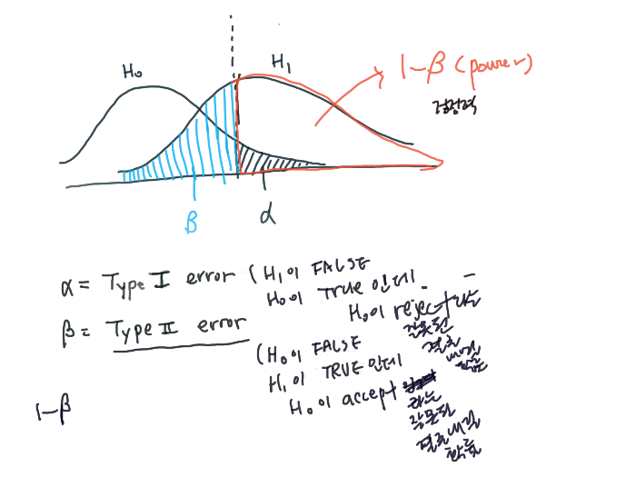
6.3.4.2 효과크기 (effect size)
검정력(1-\(\beta\))은 크게 세 가지 요소에 의해 결정된다. 유의수준, 표본 크기, 그리고 효과크기이다. 효과크기라는 새로운 개념이 등장했다.
효과크기(effect size)는 가설 검정 유형에 따라 다양한 지표를 사용할 수 있다. 예를 들어 두 모집단 평균차이에 관한 검정을 할때는 코헨의 d (Cohen’s d)를 사용한다. 코헨의 d를 구하는 공식은 다음과 같다.
\(d=\frac{\mu_{a}-\mu_{b}}{S_{pool}}\)
이때 pooled standard deviation은 두 모집단 분산 동일성 여부에 따라 공식이 달라짐을 이미 설명한바 있으므로 참고하길 바란다(reference) 공식을 잘 살펴보면 결국 두 집단의 평균거리를 표준편차로 척도 차이를 조절한 것이다. 다시 말해 두집단의 평균 거리가 크 수록 코헨의 d, 즉 효과크기가 커진다.
6.3.4.3 검정력 (power)
[그림 1]에서 확인할 수 있듯이 검정력은 영가설이 기각되고, 연구가설이 채택되는 확률이다. 앞서 언급했듯이 검정력은 효과크기, 신뢰수준, 그리고 표본크기에 따라 달라진다.
6.3.4.3.1 효과크기와 검정력
두모집단 평균차이에서의 효과크기는 영가설과 연구가설의 평균의 차이와 비례한다. 아래 그림과 같이 효과크기가 커질수록, 즉 영가설과 연구가설의 평균차이가 커질수록 연구가설이 채택되는 확률(검정력)이 커지는 것을 알 수 있다.
그림
6.3.4.4 검정력의 활용 : 적정 표본수의 결정
검정력은 연구가설이 참일대, 영가설을 기각하고 연구가설을 채택하는 확률이기 때문에 중요하다. 흔히 가설을 검증할때 허용오차 수준만을 고려하기 때문에 간과되기 쉽다. 표본크기가 작은 실험연구에서는 검정력이 중요하게 고려되는데, 일부 연구분야에서는 일정 수준 이상의 검정력을 요구하는 경우가 있다. 검정력을 확보하기 위해서는 허용오차수준을 늘리거나, 샘플사이즈를 늘리거나, 효과크기를 늘려야 한다. 그러나 허용오차 수준을 늘리면 1종 오류가 늘어나고, 효과크기는 연구자가 조절하기가 어려운 영역이다. 따라서 보통 표본 크기를 늘리는 방식으로 검정렬을 늘리곤 한다. R에서는 pwr 패키지 등을 활용하면 일정 수준의 검정력을 확보하기 위한 최소 표본크기를 계산해준다. 만일 산업인력개발 분야에서 실험 연구 등과 같은 작은 표본을 대상으로 연구를 진행한다면, 반드시 검정력을 고려해 표본크기를 결정해야 한다.
6.3.5 R을 활용한 t 검정
앞서 3종류의 t 검정방법에 대해 알아보았다.
- 단일모집단 평균에 대한 t검정
- 동일모집단 반복측정 평균에 대한 t 검정
- 두 모집단 평균에 대한 t검정
종합해보면 1번은 모집단이 한개, 2번은 모집단이 한개이지만 반복측정한 두개의 값의 평균차이를 검증, 3번은 서로다른 두개의 모집단의 평균의 차이가 있는지를 확인하는 방식이다. 가상의 데이터를 활용해서 t 검정을 해보자.
6.3.5.1 단일 모집단 평균 t 검정
C사에서 판매하는 립밤 제품의 중량은 3g으로 표기되어 있다. 하지만 많은 소비자들이 립밤이 너무 빨리 닳는다며, 표기 중량보다 적게 들어 있다고 생각했다. 어떤 유튜버가 총 15개의 립밤을 무작위로 구매하여 각각의 중량을 측정하였다.
유튜버의 목적은 C사의 립밤의 평균중량이 3g에 미치지 않는 다는 것을 증명하는 것이다. 갖고 있는 관측데이터는 15개에 불과하지만, 이 데이터를 통해 모집단(C사에서 판매하는 모든 립밤)의 평균중량을 예측하는 것이다.
이때 연구가설과 영가설은 다음과 같다. H1: C사 립밤의 평균중량은 3g보다 작다(less than 3g) H0: C사 립밤의 평균중량은 3g과 같거나 크다.
r 코드는 간단하다. t.test를 사용하면 되고, 괄호안에는 총 4개의 인수를 지정해준다. 첫째, 데이터셋$변수명, 둘째, 가설검정할 평균값, 셋째, 단측검정과 양측검정, 넷째, 신뢰수준을 추가해야한다. 이 사례에서는 가설검정을 할 평균값이 3g이므로 mu=3, 연구가설이 평균(mu=3)보다 작다이므로 단측검정, 신뢰수준은 연구자가 설정한 95 프로 이다.
ID<-c(1,2,3,4,5,6,7,8,9,10,11,12,13,14,15, 16, 17, 18, 19, 20, 21, 22, 23, 24, 25)
X<-c(3.00, 2.75, 2.81, 3.0, 2.93, 3.01, 3.10, 3.20, 2.90, 3.00, 3.00, 2.95, 2.75, 2.88, 3.12, 3.05, 3.10, 2.85, 2.95, 2.90, 2.79, 3.14, 3.00, 3.10, 2.83)
onesampleT<-data.frame(ID, X)
mean(onesampleT$X)
## [1] 2.9644
t.test(onesampleT$X, mu=3, alternative="less", conf.level=0.95)
##
## One Sample t-test
##
## data: onesampleT$X
## t = -1.4225, df = 24, p-value = 0.08388
## alternative hypothesis: true mean is less than 3
## 95 percent confidence interval:
## -Inf 3.007219
## sample estimates:
## mean of x
## 2.9644검정 결과, 표본평균은 2.9644이지만 t검정통계량이 -14.225, p-value가 0.08388로 연구가설이 기각되고, 영가설이 채택되었다. 다시 말해 C사의 립밤의 평균중량은 3g과 같거나 크다고 볼 수 있다.
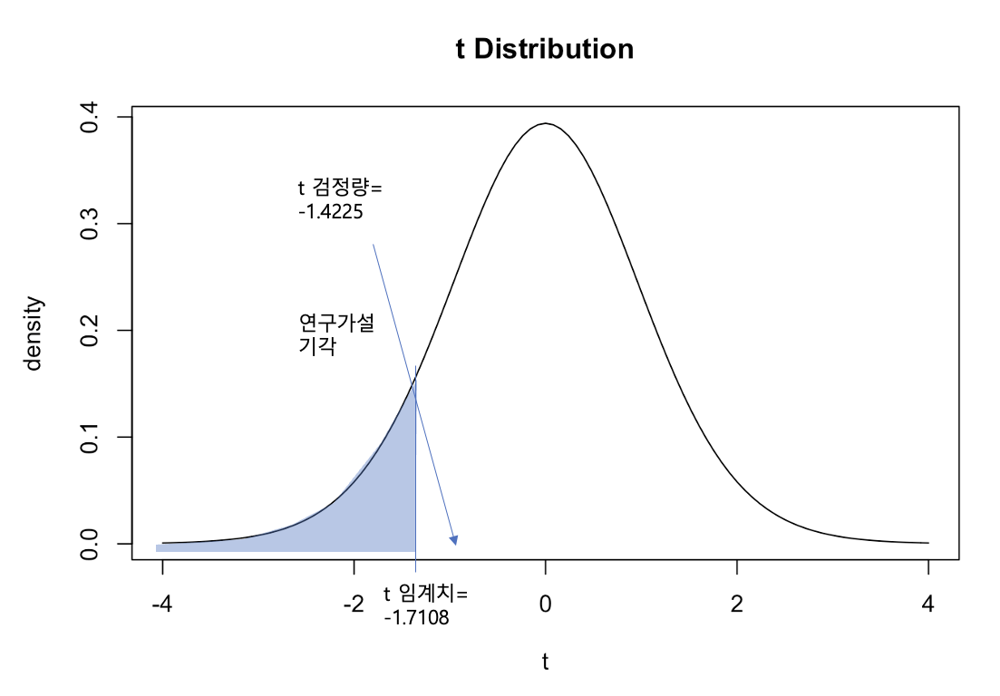
6.3.5.2 단일 모집단 반복측정 평균 t 검정 (paired t-test)
모든 t 검정의 명령어는 t.test()로 동일하다. 다만 괄호안의 인수들을 변경하여 지정함으로서 3개 유형의 t검정을 실시할 수 있다. 이것은 인수들을 자칫 잘못 지정하면 엉뚱한 검정을 할 수 있다는 것을 의미한다.
t.test()에서 지정할 인수는 다음과 같다.
분석에 사용될 데이터명과 변수명 : 데이터명\(변수명1, 데이터명\)변수명2의 형태로 지정
- 영가설은 변수1-변수2=0
가설검정방식 : 양측검정, 단측(왼쪽/오른쪽)검정
- 양측검정 : two.sided, less, greater
집단간 동분산 : default : FALSE
쌍체비교 여부(대응표본여부) : true/false
conf.level= 연구자 지정 (0.90, 0.95, 0.99….)
데이터를 입력한 후에는 일단 각 집단별 평균을 구해보자. 사전점수는 3.024, 사후검사는 3.28로 사후검사가 더 높은 것을 알 수 있다. 다음으로는 집단간 동분산을 확인하여야 한다. 동분산 가정이 충족되지 않는 경우 t값의 계산 공식이 달라지기 때문이다. 집단간 동분산을 검증하는 방법이 여러가지가 있다. 여기서는 var.test명령어를 사용해보자. 분석결과 p값이 상당히 커서 연구가설(두 집단의 분산의 차이가 0이 아니다)이 기각된다. 따라서 두 집단은 분산이 같다고 가정할 수 있다.
이를 기초로 t.test명령어를 사용하여 분석해보면 t 값은 -4.2262 이고, p-value는 0.05 미만으로 연구가설을 채택한다. 연구가설은 “Xpre-Xpost가 0이 아니다” 이므로 두 집단간의 차이가 있다고 결론내릴 수 있다.
## 데이터 입력
ID<-c(1,2,3,4,5,6,7,8,9,10,11,12,13,14,15, 16, 17, 18, 19, 20, 21, 22, 23, 24, 25)
Xpre<-c(3.0, 3.5, 3.2, 3.0, 2.8, 3.1, 3.1, 3.2, 2.9, 3.0, 3.0, 3.1, 3.3, 2.0, 3.5, 3.2, 3.3, 2.8, 2.9, 2.9, 2.7, 3.2, 3.0, 3.1, 2.8)
Xpost<-c(3.2, 3.8, 3.4, 2.8, 3.5, 3.2, 3.3, 3.7, 3.1, 3.8, 3.3, 2.9, 3.1, 2.8, 3.6, 3.5, 3.7, 2.9, 2.9, 3.6, 3.3, 3.5, 3.1, 3.4, 2.6)
prepostT<-data.frame(ID, Xpre, Xpost)
## 사전/사후 집단의 평균비교
mean(prepostT$Xpre)
## [1] 3.024
mean(prepostT$Xpost)
## [1] 3.28
## 집단간 동분산성 확인
var.test(prepostT$Xpre, prepostT$Xpost)
##
## F test to compare two variances
##
## data: prepostT$Xpre and prepostT$Xpost
## F = 0.76847, num df = 24, denom df = 24, p-value = 0.5238
## alternative hypothesis: true ratio of variances is not equal to 1
## 95 percent confidence interval:
## 0.3386396 1.7438650
## sample estimates:
## ratio of variances
## 0.7684672
## 쌍체비교 t-test
t.test(prepostT$Xpre, prepostT$Xpost, var.equal=TRUE, alternative="two.sided", conf.level=0.95, paired=TRUE)
##
## Paired t-test
##
## data: prepostT$Xpre and prepostT$Xpost
## t = -4.2262, df = 24, p-value = 0.0002971
## alternative hypothesis: true mean difference is not equal to 0
## 95 percent confidence interval:
## -0.3810207 -0.1309793
## sample estimates:
## mean difference
## -0.2566.3.5.3 두 모집단 평균 t 검정 (two sample t-test)
두 모집단 평균 t검정은 paired t-test와 매우 유사한 데이터 구조를 갖고 있지만 쌍별 비교가 아니라 두 집단의 전체 평균을 비교한다는 점에서 차이가 있다. r명령어도 매우 유사한데, 다만 “paired=FALSE”로 반드시 지정해주어야 잘못된 분석결과를 피할 수 있다.
앞서 paired t-test에서 사용한 데이터셋을 그대로 사용해보자. 다만 이번에는 A직무 25명과, B직무 25명의 시험점수를 측정해서 학년간 격차가 있는지 확인한다고 가정하자.
## 데이터 입력
ID<-c(1,2,3,4,5,6,7,8,9,10,11,12,13,14,15, 16, 17, 18, 19, 20, 21, 22, 23, 24, 25)
A<-c(3.0, 3.5, 3.2, 3.0, 2.8, 3.1, 3.1, 3.2, 2.9, 3.0, 3.0, 3.1, 3.3, 2.0, 3.5, 3.2, 3.3, 2.8, 2.9, 2.9, 2.7, 3.2, 3.0, 3.1, 2.8)
B<-c(3.2, 3.8, 3.4, 2.8, 3.5, 3.2, 3.3, 3.7, 3.1, 3.8, 3.3, 2.9, 3.1, 2.8, 3.6, 3.5, 3.7, 2.9, 2.9, 3.6, 3.3, 3.5, 3.1, 3.4, 2.6)
twosampleT<-data.frame(ID, A, B)
## A와 B집단의 평균비교
mean(twosampleT$A)
## [1] 3.024
mean(twosampleT$B)
## [1] 3.28
## 집단간 동분산성 확인
var.test(twosampleT$A, twosampleT$B)
##
## F test to compare two variances
##
## data: twosampleT$A and twosampleT$B
## F = 0.76847, num df = 24, denom df = 24, p-value = 0.5238
## alternative hypothesis: true ratio of variances is not equal to 1
## 95 percent confidence interval:
## 0.3386396 1.7438650
## sample estimates:
## ratio of variances
## 0.7684672
## 두집단 t-test
t.test(twosampleT$A, twosampleT$A, var.equal=TRUE, alternative="two.sided", conf.level=0.95, paired=FALSE)
##
## Two Sample t-test
##
## data: twosampleT$A and twosampleT$A
## t = 0, df = 48, p-value = 1
## alternative hypothesis: true difference in means is not equal to 0
## 95 percent confidence interval:
## -0.1684459 0.1684459
## sample estimates:
## mean of x mean of y
## 3.024 3.0246.4 분산분석 (ANOVA)
앞서 살펴본 t-test는 평균을 비교하는 집단의 수가 2개일때 가능한 분석 방법이다. 만일 세개 이상의 집단간 평균의 차이가 유의미하게 있는지 검증하고 싶다면 분산분석(ANOVA, Analysis of Variance)을 수행해야 한다. 예를 들어 학년별 평균 GPA의 차이가 있는지?, 출퇴근 수단(자차,도보,버스,지하철)에 따라 평균 출근소요시간에 차이가 있는지?, 교육방법(강의식, 토론식, 자기학습식)에 따라 교육성과에 따라 차이가 있는지? 등이 분산분석을 통해 검증할 수 있는 연구질문들이다.
6.4.1 분산분석 (ANOVA)의 개념
세개 이상의 집단간 평균차이를 비교하는데 왜 분산을 분석해야 할까? 강의를 하다보면 많은 학생들이 이와 같은 질문을 한다. 만일 세 집단의 평균차이를 검증하고 싶다면 두집단씩 쌍별로 t검증을 세번하면 되지 않을까(예: A-B 평균차이, B-C 평균 차이, A-C의 평균차이)? 그러나 이 경우 다수의 가설검증으로 인해 1종 오류의 크기가 증가하기 때문에 문제가 발생한다.
t검증을 다시 떠올려보면 A그룹과 B그룹의 평균차이를 하나의 값(A-B)으로 계산해서 t값을 계산한다. 그러나 세 집단 이상의 경우 평균의 차이는 하나의 수치로 계산이 되지 않는다. 분산분석(ANOVA)는 집단간 평균의 차이(differences)를 사용하지 않고, 집단간 평균의 분산(variance)을 활용하는 방법이다.
6.4.1.1 분산분석의 종류
분산분석은 평균의 차이를 확인하고 싶은 종속변수(Y)을 구분하는 집단이 3개 이상일때 쓰인다. 분산분석은 종속변수와 독립변수의 수에 따라 다음과 같이 구분된다.
- 종속변수 2개 : 다변량 분산분석
- 종속변수 1개 : 단변량 분산분석
- 독립변수 1개: 일원 분산분석 (one-way ANOVA)
- 독립변수 2개: 이원 분산분석 (two-way ANOVA)
6.4.1.2 그래프로 이해하는 일원분산분석(ANOVA)
3집단 이상의 평균간의 차이가 있는지를 확인하고 싶다면, 집단별 평균과 함께 집단내분산을 함께 고려해야한다. 아래 그림은 세 집단의 각각의 평균이 \(\mu_A\), \(\mu_B\), \(\mu_C\)로 같지만, 집단간 분산이 서로 다른 경우를 보여주고 있다.
상단의 그래프는 집단간 분산이 크다. 예를 들어 A집단의 경우 \(\mu_A\)라는 평균에서 멀리 떨어져있다. 하단의 그래프는 보다 촘촘히 집단평균에 모여있다. 집단간 분산이 작다는 뜻이다. 상단과 하단 그래프는 \(\mu_A\), \(\mu_B\), \(\mu_C\)가 모두 같다. 만일 평균만 고려한다면 상단과 하단 모두 집단간 평균차이가 유의미한것처럼 보이겠지만, 분산을 고려하면 하단 그래프만이 집단간 평균차이가 유의할 것이다. 왜냐하면 하단의 그래프는 집단간 분산이 매우 작아 집단간 평균의 차이가 분명하기 때문이다. 반대로 상단의 그래프는 평균차이는 있지만 A집단, B집단, C집단이 겹치는 경우가 많다. 따라서 집단간 평균의 차이가 유의미하지 않을 가능성이 높다.
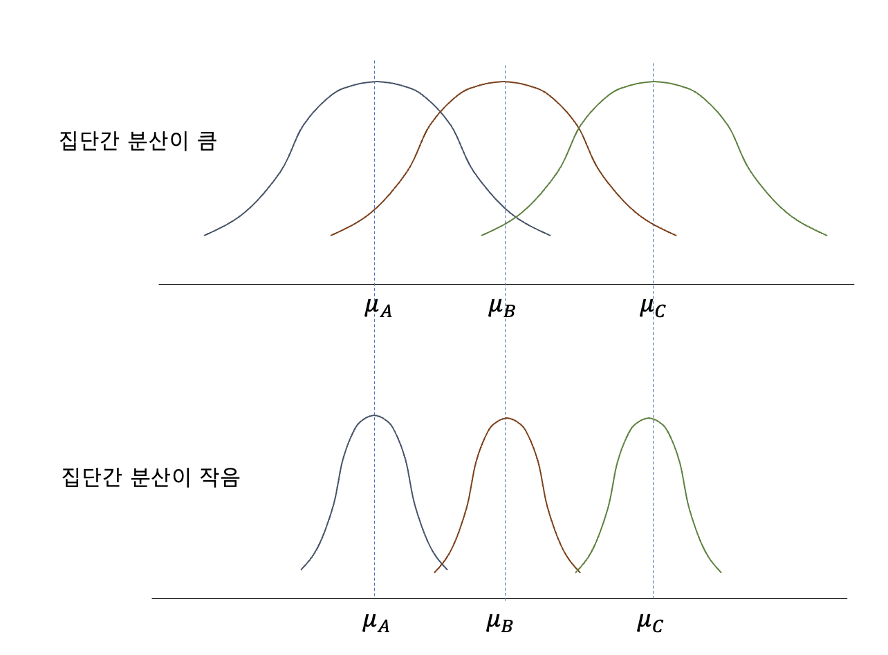
예제의 데이터를 활용해서 그래프를 그려보자. A그룹, B그룹, C그룹에 각각 5명의 사람이 있다. 변수 Y는 각 개인의 반차 사용 횟수라고 생각해보자. 우리의 연구가설과 영가설은 다음과 같다.
- H1: A, B, C 그룹간의 반차 사용횟수의 평균의 차이가 존재한다.
- H0: A, B, C 그룹간의 반차 사용횟수의 평균의 차이가 없다.
간단하게 집단별로 사용횟수의 평균 차이를 group_by와 summarize를 활용해서 분석하였다. A 집단의 평균 반차 사용횟수는 12회, B집단은 10.4회, C 집단은 15.2회이다.
박스플롯과 density plot을 그려보니 평균에는 차이가 있지만 overlapped되는 케이스가 존재하는 것을 알 수 있다. 따라서 평균 차이만으로는 위의 연구가설을 채택할 수 없다.
## ID X Y G
## 1 1 1 7 A
## 2 2 1 11 A
## 3 3 1 13 A
## 4 4 1 14 A
## 5 5 1 15 A
## 6 6 2 8 B
## 7 7 2 9 B
## 8 8 2 14 B
## 9 9 2 11 B
## 10 10 2 10 B
## 11 11 3 14 C
## 12 12 3 15 C
## 13 13 3 16 C
## 14 14 3 14 C
## 15 15 3 17 C
## # A tibble: 3 × 2
## X mean
## <dbl> <dbl>
## 1 1 12
## 2 2 10.4
## 3 3 15.2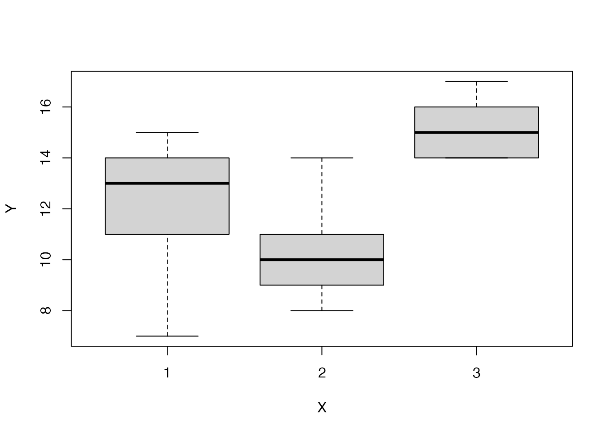
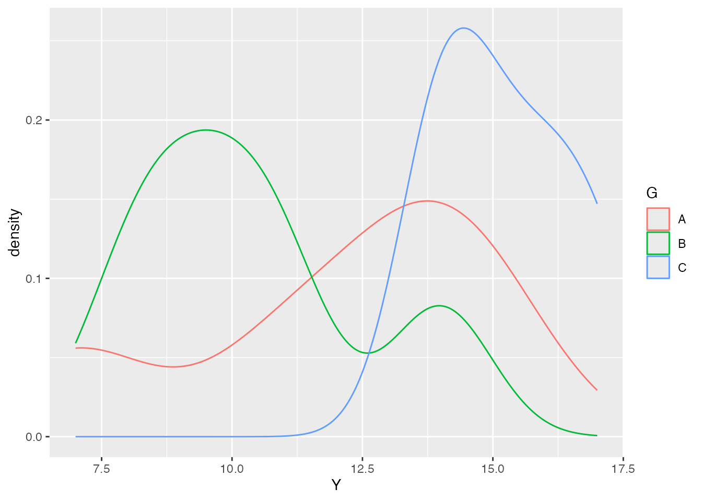
6.4.2 일원분산분석 공식
6.4.2.1 총편차, 집단간편차, 집단내편차
분산분석의 공식은 총편차, 집단간편차 그리고 집단내 편차를 이해하는것에서 시작한다.
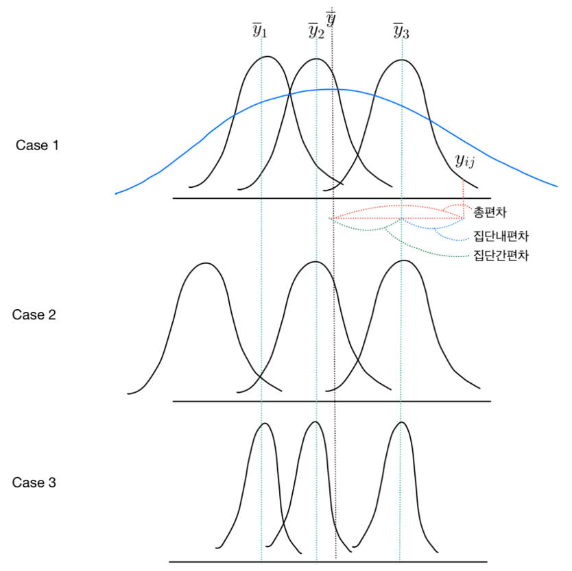
먼저 ANOVA와 같이 집단별로 케이스가 있는 경우(subsample)에는 다음과 같이 아래첨자를 쓴다는 것을 이해하자.- \(Y_{ij}\) : j번째 집단의 i번째 사람의 Y값
- 예: \(Y_{32}\) : 2번째 집단의 3번째 사람의 Y 값
- 예: \(Y_{.3}\) : 3번째 집단의 모든 사람의 Y 값
3개의 집단에서 측정한 종속변수(Y)값이 있다고 생각해보면, 평균은 총 4개이다.
총평균(grand mean) : \(\bar{Y}\)
- 집단에 관계없이 모든 \(Y_{ij}\)의 평균
- pooled mean, total mean 등으로 불리움
집단평균(group mean) : \(\bar{Y_{1}}\), \(\bar{Y_{2}}\), \(\bar{Y_{3}}\)
- 각 집단별 \(Y_{i}\)의 평균
그리고 이 평균들에서 떨어진 정도가 총편차와 집단내 편차이다.
총편차(total differences) : \(\bar{Y}\)- \(Y_{ij}\) +총평균에서 개별데이터가 떨어진 정도
집단내편차(within-group differences) : \(\bar{Y_{j}}\)- \(Y_{ij}\) +집단평균에서 해당집단의 데이터가 떨어진 정도
집단간편차(between-group differences) : \(\bar{Y}\)- \(\bar{Y_{j}}\) +총평균에서 집단평균이 떨어진 정도
위의 그림에서 알 수 있듯이 총편차=집단간편차+집단내편차이다. 따라서 이를 수식으로 정리하면 다음과 같다.
\[ (\bar{Y}- Y_{ij}) = (\bar{Y}- \bar{Y_{j}}) + (\bar{Y_{j}}- Y_{ij})\]
6.4.2.2 편차제곱합
편차를 합했을때는 모두 상쇄되는 성질이 있기때문에 제곱합의 개념을 도입한다. 총편차, 집단간편차, 집단내편차의 제곱합 공식은 다음과 같다.
- 총편차 제곱합(SST) = 집단간편차 제곱합(SSB) + 집단내편차 제곱합(SSW)
\[ \sum(\bar{Y}- Y_{ij})^2 = \sum(\bar{Y}- \bar{Y_{j}})^2 + \sum(\bar{Y_{j}}- Y_{ij})^2\] 다만 두개의 식에서 \(a=b+c\)가 어째서 \(a^2=b^2+c^2\)가 되는지 궁금한 사람이 있을 것이다. 이것이 성립하려면 \(b*c=0\)이 성립되어야 하는데, \(\sum(\bar{Y}- \bar{Y_{j}})*(\bar{Y_{j}}- Y_{ij})\)은 항상 0이기 때문에 성립된다.
6.4.2.3 평균제곱합
이제 편차제곱합의 평균을 구해보자. 평균을 구하기 위해서는 각각의 자유도를 분모로 나눠주면 된다.
- 총편차 제곱합의 자유도 : n-1 (전체 사례수-1)
- 집단간편차 제곱합의 자유도 : g-1 (전체 집단수-1)
- 집단내편차 제곱합의 지유도 : n-g (=n-1-(g-1))
종합하면 다음과 같다.
- 총평균제곱(MST) = 집단간평균제곱(MSB) + 집단내평균제곱(MSW)
\[\frac{\sum(\bar{Y}- Y_{ij})^2}{n-1} = \frac{\sum(\bar{Y}- \bar{Y_{j}})^2}{g-1} + \frac{\sum(\bar{Y_{j}}- Y_{ij})^2}{n-g}\] 편차의 제곱합을 사례수 또는 자유도로 나눠준 것이 분산이므로 다시 쓰면 다음과 같다.
- 총분산 = 집단간분산 + 집단내분산
6.4.2.4 일원분산분석 종합
이상의 내용을 하나의 표로 정리하면 아래와 같다. 보통 어떤 통계패키지를 쓰더라도 다음의 표의 내용이 산출된다. 일원분산분석의 핵심은 집단간 분산과 집단내분산의 비율을 계산하는 것이다. 앞서 살펴본 것처럼 집단간분산이 집단내 분산보다 유의미하게 커야 집단간의 평균차이가 있다고 결론내릴 수 있기 때문이다.
- 총분산에서 집단간분산의 비율이 큰 경우 -> 집단간 평균의 차이가 크다. 집단내 분산은 상대적으로 작기 때문에 겹치는 부분이 적다
- 총분산에서 집단간분산의 비율이 작은 경우 -> 집단간 평균의 차이가 없다. 집단내 분산이 상대적으로 크기 때문에 겹치는 부분이 많다.
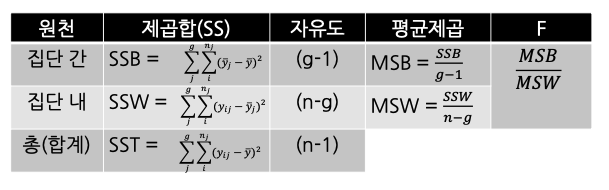
집단간 평균차이의 유의성을 검증하기 위해서 F value를 산출해야하는데 이는 집단간평균제곱과 집단내평균제곱합의 비와 같다.
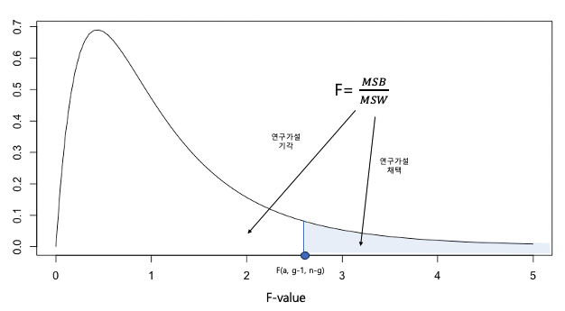
6.4.3 손으로 풀어보는 일원분산분석(ANOVA)
이상의 이해를 바탕으로 일원분산분석을 손으로 계산해보자. 요즘같은 디지털세상에 손으로 계산하는 것이 우습고 느려보일 수는 있지만, 정확한 이해를 돕는데 이만한 방법이 없다. 앞서 살펴본 집단별 연차횟수의 평균 차이를 확인하려던 데이터를 가져와보자.
## G Y
## 1 A 7
## 2 A 11
## 3 A 13
## 4 A 14
## 5 A 15
## 6 B 8
## 7 B 9
## 8 B 14
## 9 B 11
## 10 B 10
## 11 C 14
## 12 C 15
## 13 C 16
## 14 C 14
## 15 C 17좀 더 쉽게 계산하기 위해서는 위의 long data format을 wide data format으로 바꾸도록하자.
A_group<-c(7, 11, 13, 14, 15)
B_group<-c(8, 9, 14, 11, 10)
C_group<-c(14, 15, 16, 14, 17)
longAnova<-data.frame(A_group, B_group, C_group)
longAnova
## A_group B_group C_group
## 1 7 8 14
## 2 11 9 15
## 3 13 14 16
## 4 14 11 14
## 5 15 10 17이를 바탕으로 분산분석표를 계산해보면 다음과 같아.
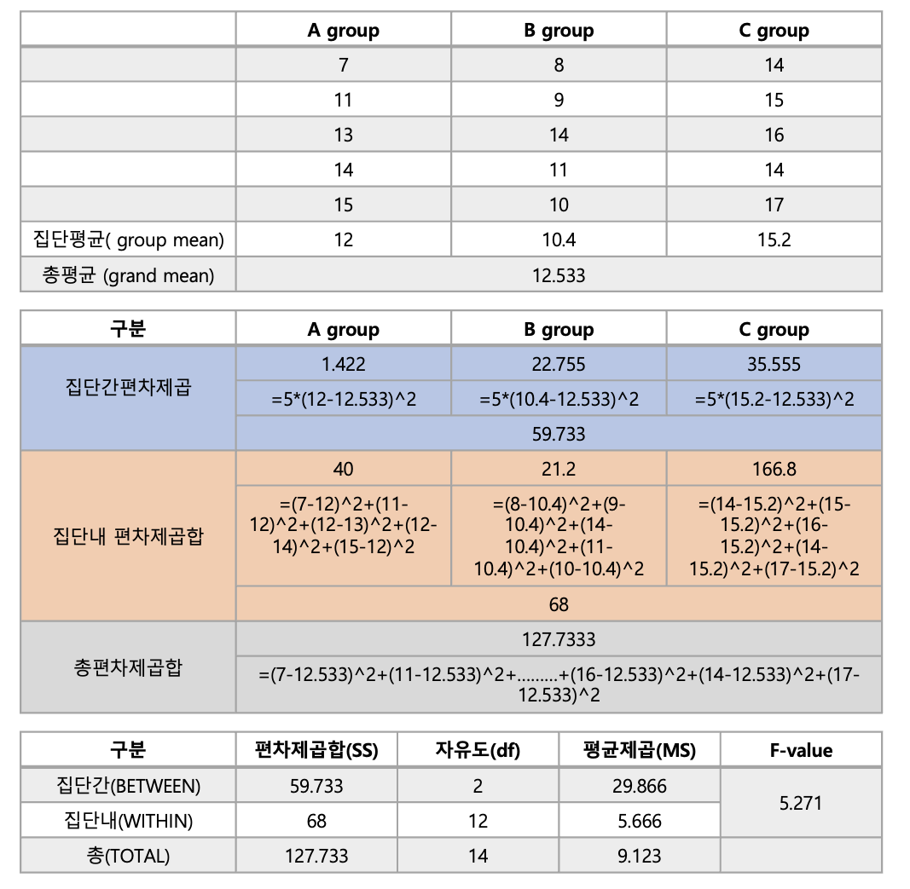
가설검증의 유의수준이 0.05인경우 F table 을 통해 임계치를 찾아보면 F=3.8853인것을 확인할 수 있다.
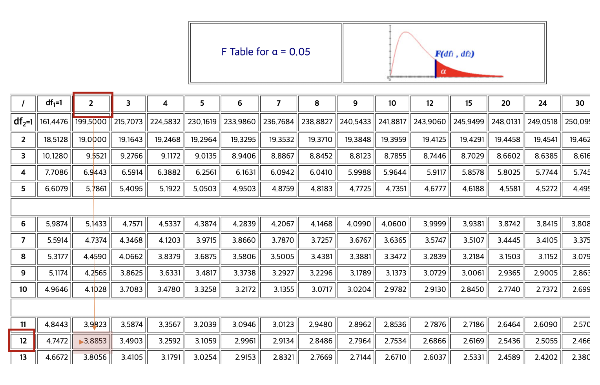
우리의 검정통계량은 5.271, 임계치는 3.8853이므로 연구가설은 채택된다.
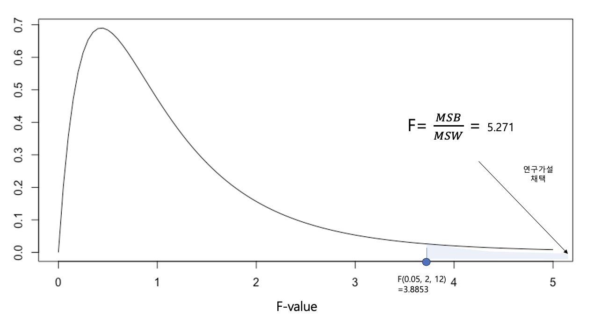
6.4.4 R을 활용한 일원분산분석(ANOVA)
6.4.4.1 R code
R을 통해 일원분산분석을 하는 것은 매우 쉽다. oneway.test라는 명령어와 종속변수, 독립변수를 지정해주기만 하면된다.
##
## One-way analysis of means
##
## data: Y and X
## F = 5.2706, num df = 2, denom df = 12, p-value = 0.022766.4.4.2 주의: 등분산성 가정
추가로 고려해야할 것인 일원분산분석의 기본 가정이다. 이중 가장 대표적인 것이 세집단의 등분산 가정이다. 만일 등분산 가정이 충족되지 않는다면 F-value를 계산하는 공식이 달라진다.
등분산성을 확인하는 방식은 여러가지다. 바틀렛테스트(battlett.test)나 레벤테스트(leveneTest)가 대표적이다. 둘다 영가설(H0)은 집단간 분산이 모두 같다. 연구가설(H1)은 적어도 두개의 집단의 분산이 서로다르다. 따라서 두개의 테스트에서 연구가설이 기각된다면 집단간의 등분산성이 확인된다고 볼 수 있다.
##
## Bartlett test of homogeneity of variances
##
## data: dataAnova$Y by dataAnova$G
## Bartlett's K-squared = 2.5304, df = 2, p-value = 0.2822
## Loading required package: carData
##
## Attaching package: 'car'
## The following object is masked from 'package:dplyr':
##
## recode
## The following object is masked from 'package:purrr':
##
## some
## Warning in leveneTest.default(y = y, group = group, ...): group coerced to
## factor.
## Levene's Test for Homogeneity of Variance (center = median)
## Df F value Pr(>F)
## group 2 0.675 0.5275
## 12그 결과 바틀렛테스트와 레벤테스트 모두 연구가설(집단간 분신이 다르다)를 기각하고, 영가설(집단간 분신이 서로 같다)극 채택하였다. 따라서 앞서 일원분산분석시 var.equal=TRUE의 옵션을 지정해주면 된다. 만일 집단간 분산이 서로 다르다면 var.equal=FALSE를 넣어주면 그에 맞는 계산이 이루어진다.